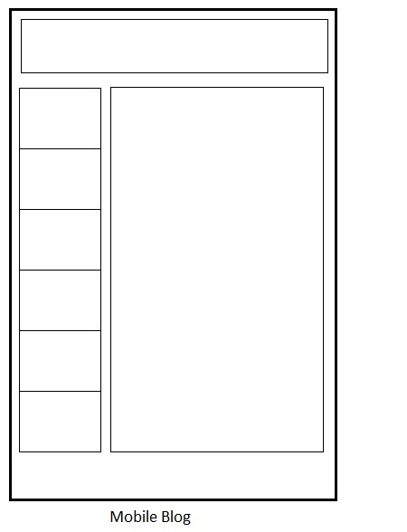
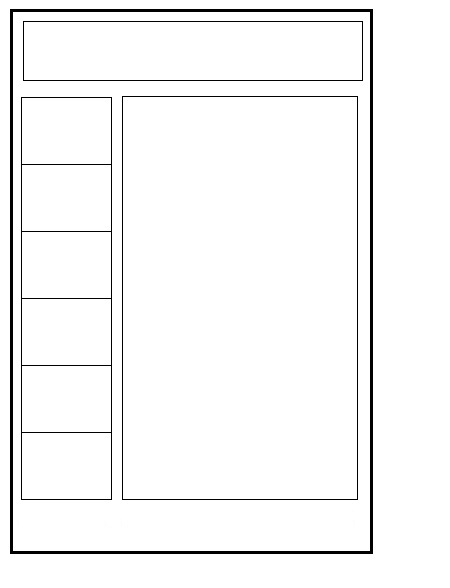
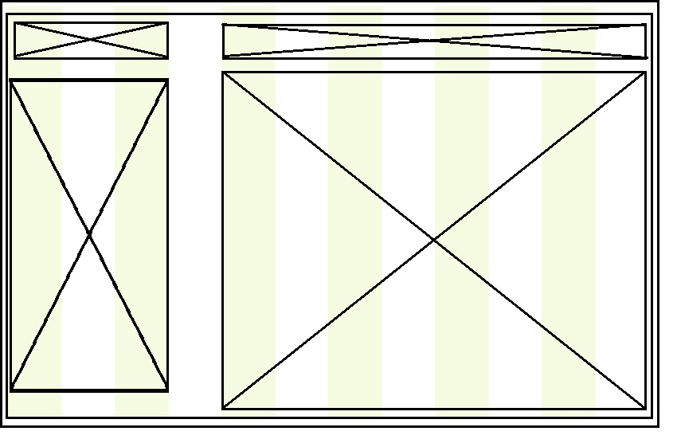
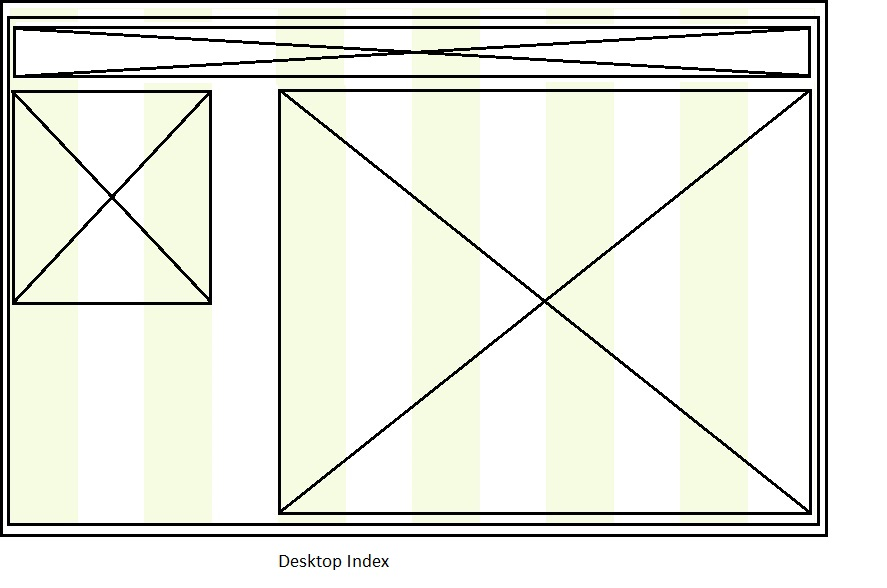

Design to Web
What is a responsive site? and why is responsiveness important?
A responsive site is a site that functions equally as well on diffrent devices. It is important becasue these days there are so many diffrent devices that people are using to view the web. We want to opptomise funtionality on all devices to make sure we can still reach our audiences
What is mobile first design? and why is it important?
Also known as progressive enhancement, it is designing websites for smaller screens first then adding more content and design for bigger screens 2nd. This is important because it results in more impressive end products, when you start with a design for a desktop you often find that the features dont scale down well to smaller screens, so you take those features out and end up with a boring and empty mobile design. If you plan your site for mobile first and make it impressive on the small screen when yu scale it up there is so much room for great features to be added rather than taken out.
What are frameworks, and their pros and cons?
A framework is a set of pre-defined code. When coding you offten use the same code for each page. a framework can be used to save time and space. they have pros and cons though:
Pros
- Saves time
- The code is tidy
- Helpful when working in groups
- Will have browser compatability
- Exess code
- You wont learn how to do things yourself
- They mix content and presentation
What is a wireframe and why we use it
wire frames are a way of drawing a web page design just showing where the main content areas will be placed. Its like the stick figure version of a website template. It is useful for the design mock up process. It shows the pages functionality not what it looks like.




What aspects of your wireframes were difficult to implement? Why?
The shorter menu on the index page, i ended up making it the same siza on all pages so it could be referenced to the same class in the main.css file. There was also an issue with the home link being on the left side, it wasnt clear that it was a link.